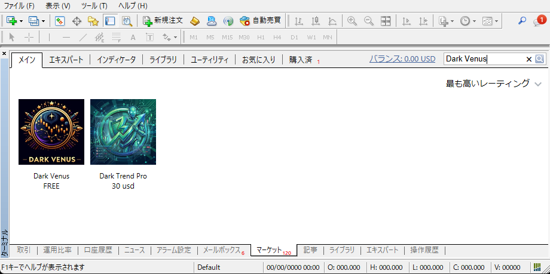
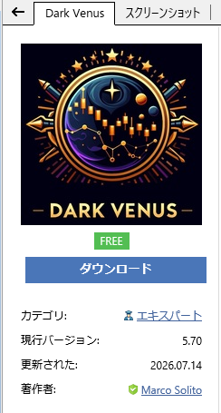
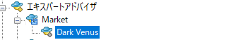

Dark Venus本体の無料入手、拾った.setファイルのバックテスト方法、実際のMT4チャートへの読み込みまで流れに沿ってさらっと解説します！
ここにGoogle AdSenseやバナー広告が入ります
Dark Venusは有料の商材ではなく、MQL5マーケット公式から誰でも無料でダウンロードできます。
MT4のマーケットタブからEAをダウンロードするには、MQL5公式コミュニティの無料会員登録（アカウント作成）およびMT4へのログインが必須です。

📷 MT4画面下のマーケットタブからDark Venusを検索してダウンロード

📷 無料ダウンロードボタンを押すとMT4に自動インストールされます
トップページの「拾い物.set一覧」から、動かしてみたい通貨ペアや時間足の設定ファイル（拡張子が .set のファイル）をパソコンにダウンロード保存します。
リアル口座やデモ口座に適用する前に、まずはMT4の「ストラテジーテスター」を使って過去データでテスト（バックテスト）してみることを強くおすすめします！
Ctrl + R）を開きます。.set
ファイルを読み込ませます。いよいよ実際のチャートにDark Venusと.setファイルをセットして自動売買を開始します！
.set ファイルを選択して「OK」を押せば設定完了です！
📷 「パラメーターの入力」タブの「読み込み」ボタンから.setファイルを適用します
ここにGoogle AdSenseやバナー広告が入ります